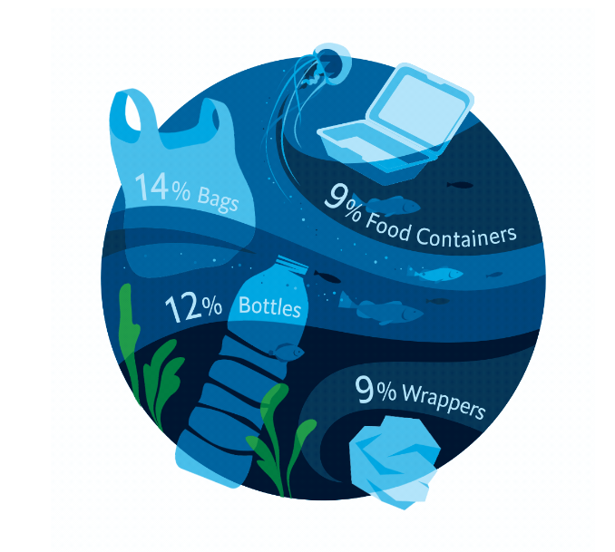

05/06/2024
En un periodo de crisis ambiental, donde la presencia de microplásticos en los océanos ha alcanzado niveles insostenibles, Rapa Nui fue sede de la Cumbre del Pacífico 2024 por la protección de los océanos y el desafío de la contaminación del plástico y microplástico de la región. Esta cumbre reunió a islas del pacífico para discutir estrategias globales para combatir la contaminación del océano y comprometerse con una mayor protección oceánica en la región.
Hoy en día, existen 270,000 toneladas de microplástico sólo en la superficie del mar, y se estima que existen 4 billones de microfibras plásticas por kilómetro cuadrado en el fondo del mar. El uso de plásticos de un solo uso y la producción de basura a niveles actuales ha generado una crisis global que afecta principalmente a las islas del pacífico, en cuyas costas termina gran parte de esta basura. Sólo Rapa Nui recibe cada año 4.4 millones de objetos de basura en sus costas, incluyendo principalmente plástico y poliestireno que circulan por el océano.
Las consecuencias de esta contaminación son mortales para aves, peces y animales marinos que confunden el plástico con comida. La ONG Surfers Against Sewage estima que uno de cada tres pescados consumidos por lo humanos contienen microplástico, lo que también tiene consecuencias de largo plazo para la salud de los humanos.
El 80% de la contaminación en mares está relacionado con plásticos producidos en territorio continental. El plasctic disclosure project, un Proyecto basado en Hong Kong, estima que el solo el 33% de plástico manufacturado tiene un solo uso y un 85% del plástico en el mundo no se recicla. Gran parte de esto termina en el mar.
La cumbre terminó con la declaración de Rapa Nui que enfatiza el compromiso de los delegados por disminuir la contaminación de microplásitcos. Pero este problema requiere de un esfuerzo global que nos compromete a todos los gobiernos globalmente y a cada uno de nosotros. Partiendo por una mayor conciencia ambiental, generación de información, reducción de plásticos de un solo uso, mayor responsabilidad ambiental empresarial, el fomento del reciclaje y un mayor enfoque en la economía circular.
Puedes ver la Cumbre del Pacífico 2024 en Youtube.